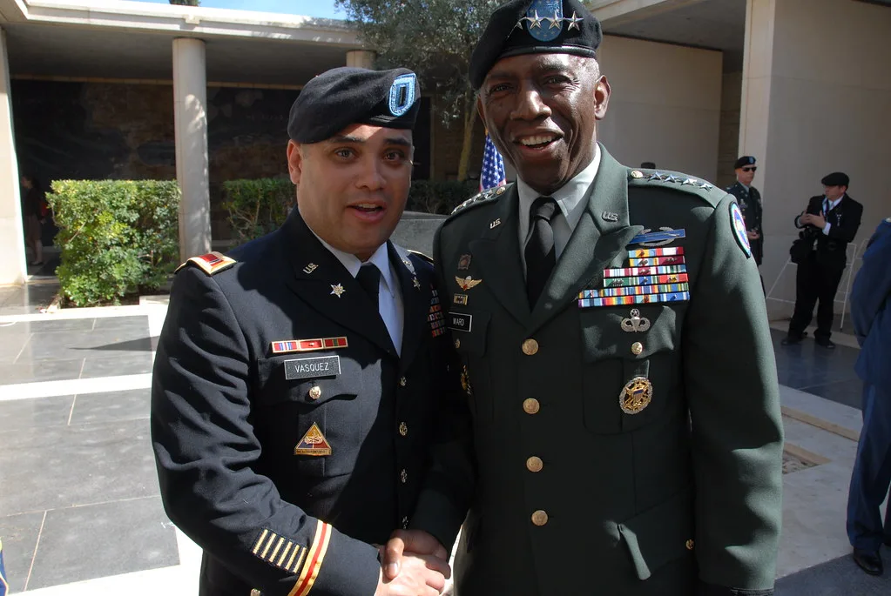

김민석 대표, DJ 서거 17주기 추모식 참석…"김대중 노선 계승"
고(故) 김대중 전 대통령 서거 17주기 추모식이 18일 오전 서울 동작구 국립서울현충원 현충관에서 엄수됐다. 추모위원장을 맡은 조정식 국회의장을 비롯해 더불어민주당 김민석 대표, 국민의힘 장동혁 대표, 강훈식 대통령 비서실장 등 여야 지도부와 유족, 시민 등 800여 명이 자리를 함께했다. 추모식은 고인의 생전 업적을 기리는 영상 상영과 추모사, 헌화·분향 순으로 진행됐으며, 참석자들은 엄숙한 분위기 속에서 민주화와 남북화해에 헌신한 고인의 삶을 되새겼다. 매년 8월 이맘때 열리는 이 행사는 여야가 정파를 떠나 함께하는 자리로 꾸준히 이어져 왔다.
취임 이후 첫 공식 추모 일정을 소화한 김민석 대표는 이날 오전 국회 본관 당대표실에서 강훈식 비서실장과 홍익표 정무수석으로부터 대통령이 보낸 축하 난을 전달받은 뒤 곧바로 현충원으로 이동했다. 추모식 참석 후에는 현충원에 안장된 김대중 전 대통령의 묘역을 찾아 헌화하고 방명록에 "헌법정신의 바탕 위에 대체불가 대한민국을 만들어 가겠습니다"라고 적었다. 그는 이 자리에서 취재진에게 "이재명 국민주권정부는 김대중의 노선 위에 서 있다"며 "그 뜻을 잘 따라 집권당다운 집권당을 만들겠다"고 말한 것으로 전해졌다. 새 지도부의 첫 대외 행보가 김대중 전 대통령에 대한 참배로 시작된 셈이어서, 당 안팎에서는 이번 일정이 갖는 상징적 의미에도 관심이 쏠렸다.

김 대표는 현충원 참배에 이어 용산구 효창공원으로 이동해 임시정부 요인들이 안장된 묘역을 찾아 참배했다. 이후에는 광주로 내려가 국립 5·18 민주묘지를 찾아 헌화하는 일정도 소화했다. 하루 동안 서울과 광주를 오가는 강행군 일정을 소화한 셈으로, 여당 신임 대표가 취임 직후 김대중·5·18 관련 사적지를 잇달아 참배한 것을 두고 정치권에서는 당의 정체성을 재확인하고 정통 야당 시절의 정신을 강조하려는 행보라는 해석이 나온다.

이날 추모식에는 여야 지도부가 나란히 참석해 눈길을 끌었다. 장동혁 국민의힘 대표도 현충관을 찾아 헌화·분향에 동참했으며, 추모사에서는 고인이 남긴 민주화와 남북관계, 외환위기 극복 등의 업적이 거듭 언급됐다. 매년 8월 열리는 이 추모식은 정치적 성향과 무관하게 여야 지도부가 함께 참석하는 자리로 자리매김해 왔으며, 올해도 여야가 한자리에 모여 고인을 기리는 모습이 연출됐다.
정치권에서는 이번 추모식이 여름 정기국회를 앞두고 여야가 잠시 대치를 멈추고 공존의 메시지를 보여주는 계기가 됐다는 평가도 나온다. 다만 추모식 이후에는 곧바로 각당의 정기국회 일정과 예산안 심사, 각종 쟁점 법안을 둘러싼 신경전이 재개될 것으로 예상된다. 김민석 대표는 추모 일정을 마친 뒤 당 지도부 회의에서 하반기 국정 운영 방향과 정기국회 대응 전략에 관한 메시지를 낼 것으로 알려졌으며, 당내에서는 새 지도부 체제의 첫 정기국회 준비에도 속도를 내는 모습이다.
한편 김대중 전 대통령의 유족과 김대중평화센터 등 관련 단체들도 이날 별도의 추모 행사를 마련해 고인의 뜻을 기렸다. 김대중평화센터 측은 고인이 강조했던 화해와 통합의 정신을 되새기는 자리라며, 매년 추모식을 통해 후대에 그 의미를 전하고 있다고 밝혔다. 정치권 안팎에서는 이번 17주기 추모식을 계기로 여야가 협치의 실마리를 이어가야 한다는 목소리도 함께 제기되고 있다.